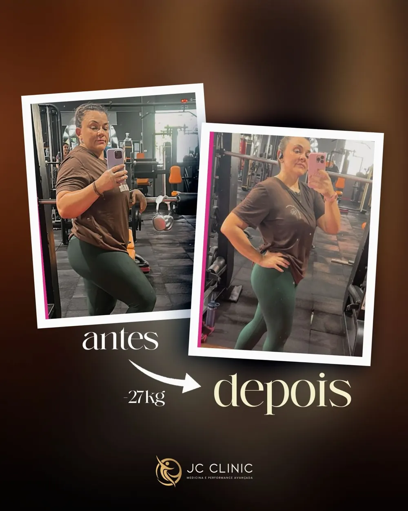
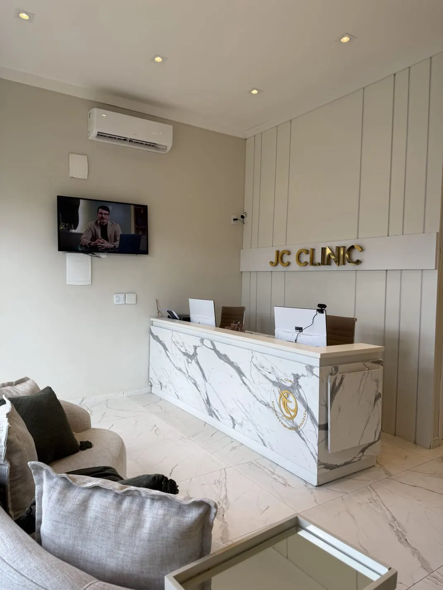

Dr. Jacson Alex
Médico nutrólogo · CRM-RN 10245
Especialista em obesidade e performance. Diagnóstico metabólico, exames, modulação hormonal e, quando indicado, tratamento medicamentoso.
Nutrologia + Nutrição · Mossoró/RN
Dr. Jacson Alex & Dra. Camila Fontes
Um médico. Uma nutricionista.
Um único protocolo.
Os especialistas
Na maioria das clínicas, o médico pede exame num dia e a dieta chega de outro profissional, semanas depois. Aqui, o Dr. Jacson e a Dra. Camila montam o seu plano juntos, na mesma mesa, a partir dos mesmos dados.
Médico nutrólogo · CRM-RN 10245
Especialista em obesidade e performance. Diagnóstico metabólico, exames, modulação hormonal e, quando indicado, tratamento medicamentoso.
Nutricionista clínica e esportiva
Transforma o diagnóstico em comida de verdade: plano alimentar, suplementação e estratégias que cabem na sua rotina.
Especialidades
Tratamento médico e nutricional da obesidade, preservando a massa magra e regulando o metabolismo para o peso não voltar.
Nutrologia + NutriçãoProtocolos de ganho de massa muscular com ajuste fino de calorias, proteína, suplementação e treino.
Composição corporalPara atletas e para quem treina sério: energia, recuperação e rendimento acompanhados de perto.
Medicina esportivaAvaliação e modulação hormonal masculina e feminina para devolver disposição, sono e vitalidade.
Saúde integralNa primeira consulta a gente descobre juntos. Chama no WhatsApp.
Falar agoraO caminho
“Seguindo o processo, o resultado vem!”Johnata Raphael, paciente
Avaliação clínica com o Dr. Jacson e planejamento nutricional com a Dra. Camila. Entendemos rotina, histórico e o que você quer de verdade.
Composição corporal medida com precisão e exames laboratoriais para mapear o seu metabolismo. Nada no achismo.
Plano alimentar, suplementação e, se for necessário, intervenção medicamentosa. Tudo desenhado para o seu corpo.
Ajustes conforme a evolução, para você chegar ao objetivo e, principalmente, ficar nele.

Transformação real
Menos 27 quilos. E uma nova relação com o próprio corpo.
Resultados individuais variam conforme cada organismo e adesão ao tratamento.Quem já passou por aqui
“Ótimo atendimento, profissionais perfeitos. A atenção aos detalhes na JC Clinic é diferenciada.”
“São bem prestativos e responsáveis com o paciente. O acompanhamento é realmente de perto.”
“Seguindo o processo o resultado vem! A sinergia entre o médico e a nutri faz toda a diferença.”

A clínica
Dúvidas
O nutrólogo é médico: diagnostica e trata doenças ligadas ao metabolismo e aos nutrientes, e pode prescrever medicamentos. A nutricionista elabora o plano alimentar e as estratégias de dieta. Na JC Clinic, os dois trabalham no mesmo protocolo.
Os atendimentos são particulares, para garantir o tempo e a profundidade que cada caso pede. Emitimos nota fiscal para você solicitar reembolso ao seu plano de saúde.
De jeito nenhum. Atendemos desde quem está começando e busca saúde e emagrecimento até atletas de alto rendimento. O plano parte do seu nível atual.
Pelo WhatsApp (84) 98169-3927. A equipe confirma o melhor horário para a sua consulta integrada.